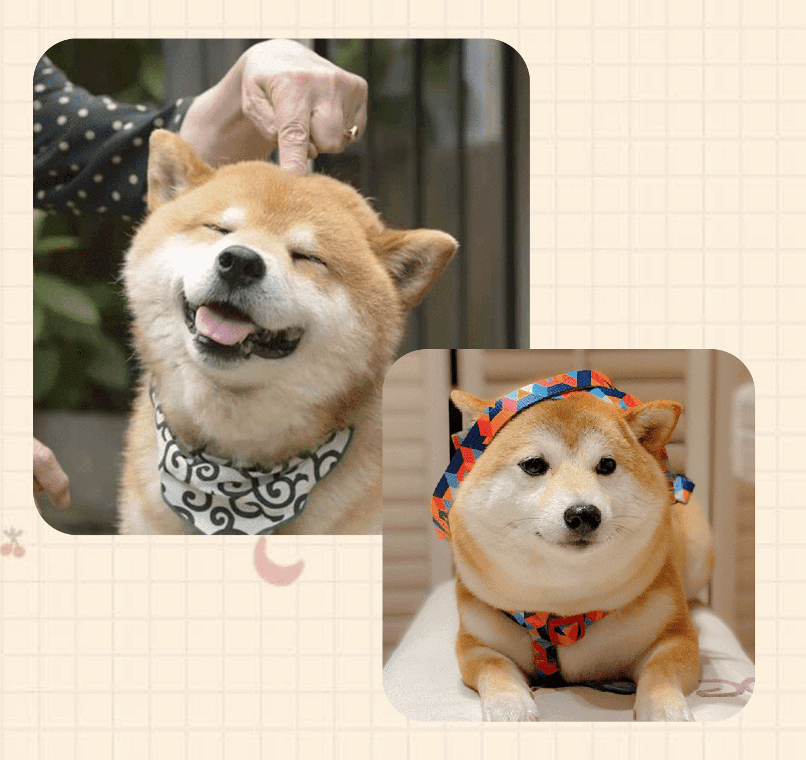

柴犬
（日語：柴犬／しばいぬ，在日文中意即「灌木叢狗」）
於1936年（昭和11年）12月16日被指定為日本的天然紀念物
頭部：額頭要寬且平坦，兩頰要健壯有力，頸部粗壯且強度適當。
眼睛：眼型略呈三角型，下眼瞼近乎直線、上眼瞼弓狀最高點約為眼頭1／3處，眼尾需適度往上翹。
耳朵：大小與頭部相稱，稍前傾直立，內耳線為直線近乎垂直、外耳線是稍有弧度的不等邊三角形。
皮毛：毛為雙層，剛毛需如針般筆直，被雨水淋濕時還能直立，綿毛軟而密生。
尾巴：尾巴為粗而有力的直狀尾或捲尾，捲尾形成的尾洞約為雞蛋大小。
乾淨好打理
柴犬是一種很愛乾淨的狗狗，小柴犬自己睡覺的地方一定很乾淨，也會把自己整理得很乾淨。
不亂叫
柴犬不會亂吠，通常在沒有陌生人情況下幾乎不會吠叫的，最多在害怕鞭炮聲或者有家人回來時高興的哼唧兩聲，不會吵到隔壁鄰居。
勇敢
柴犬天性勇敢，雖是中小型犬，但從不懼怕任何敵意勢力，生活中從不矯揉造作，意識表達比較清晰明朗。
天資聰穎
柴犬很聰明學習能力很強，特別容易訓練，訓練最好是在柴犬3個月大的時候進行，因為長大的柴犬比較難訓練。


個性固執
柴犬其實是基因最靠近狼的品種，若是沒有在幼犬期間就好好教導，長大可是會非常頭痛的。
皮膚問題、掉毛
因為柴犬的雙層毛、厚重毛髮，洗澡完一定要吹到全乾。在換毛季的掉毛量相當驚人。
大家都說柴犬換毛一年換兩次，一次換半年。
挑食
柴犬因為固執的個性，寧願餓自己個三天三夜，甚至餓到吐胃酸也不進食的柴柴也是有的。
一定要牽繩
柴犬基本上是六親不認，一但跑了，就很難叫回來的，所以一定要牽繩，不然一放手，可能就一輩子say goodbye了。
甲狀腺機能低下症 Hypothyroidism
甲狀腺機能低下症，又稱作甲狀腺功能減退，是一種常見由甲狀腺分泌甲狀腺素不足而導致的內分泌疾病。
甲狀腺機能低下症平均發生年齡約7歲，隨著年紀增長，發生甲狀腺功能低下的機會就會增加，因此需定期接受全身血液檢查才能掌控寶貝的身體狀況。
眼瞼內翻&睫毛倒插 Entropion&Trichiasis
狗狗的眼睛一旦發生睫毛倒插，不僅會造成眼睛紅腫疼痛、不停流淚、睜不開。
情況嚴重時甚至會造成眼角膜受傷、形成疤痕而影響視力，甚至導致失明。
白內障 Cataract
白內障指原本透明的水晶體，當蛋白質發生變化，瞳孔深處會變得混濁呈白色，造成光線及影像無法正常穿透水晶體到視網膜進而產生視覺，以致視力減退。
若惡化至完全成熟的白內障，患犬會完全失明，影響動作靈活度，走路易碰撞傢俱或東西，喪失方向感，找不到玩具或食物。